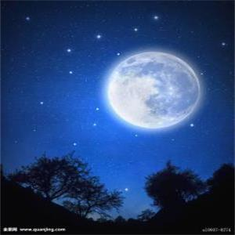

作者：许江波
时间：2017.9
其实军训还好，不是特别累，晚训完还有力气打球。可是我想啊.......
有一天晚上军训的时候，我看见了月亮。月亮很圆，散发着淡黄色的光。我坐在地上，月亮躲在篮球架后面，就像躲在人群中的我，努力散发着微弱的光，想要去照亮别人却又不敢站出来。可是月亮真的圆啊，再有一个月就是中秋了，再一次的中秋聚会就不会这么圆满了。朋友们，各奔天涯了，都还好吗？我明白聚散终有时，也知道天涯如咫尺，可是还是在一起好啊，吃个牛逼唠个嗑，喝着啤酒撸串子。
昨晚军训完拉歌，一群人围坐在操场，我又看起了月亮。月亮躲在树后面不肯露面。操场明亮的镁光灯照亮了路旁的树干，昏暗的树梢上有一丝月亮的光芒。我看啊，看着月亮千呼万唤始出来，犹抱琵琶半遮面。月亮是缺的，缺了一小撮。今晚月色那么美，为什么要拉歌呢？关了镁光灯一起看月亮吧，教官们你们是不是也在想着你们的父母家人朋友呢？为什么不一起看月亮呢？明月会将你们的情绪传递。我相信有一种无形的线连接着你们思念的人，这线以月光为载体，月亮为媒介，将天涯各地散落着的家人连接在了一起。或者就开着镁光灯吧，让我相信那是月光倾泻在大地。也唱歌吧，不要唱什么军歌，就来背海上生明月，就来纵情朗读我寄愁心与明月，就来举杯邀明月，去***军训，就看着月亮离开树影，升到中天，一如我们离开家乡各傅前程。还有，晋城的月亮是否也这么让人痴迷?徐州的呢？太原的呢？喀什的呢？上海呢？杭州呢？